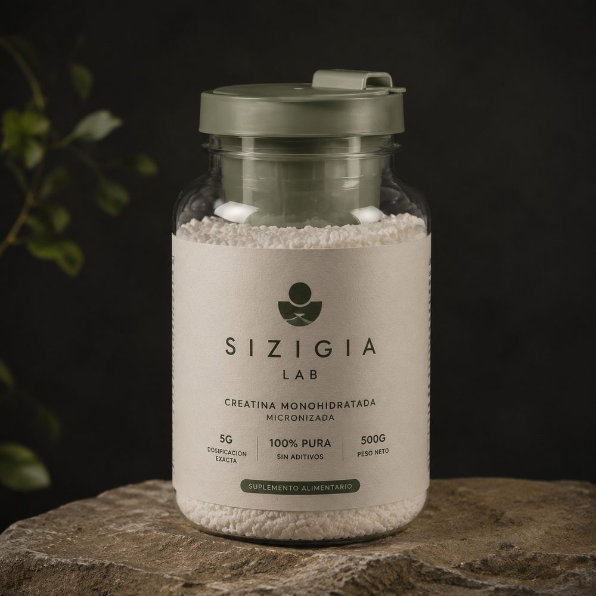

Creatina Sizigia Lab.
Creatina monohidratada micronizada, 100% pura y sin aditivos, en envase transparente de 500 g. Dosificación exacta de 5 g por porción.
Una de las suplementaciones con más investigación disponible. En Sizigia Lab forma parte de una conversación más amplia sobre movimiento, sueño y nutrición, y el Dr. Acuña puede orientar cuándo tiene sentido para ti.
Producto de suplementación. Complementa una alimentación variada y una evaluación médica. Consulta con tu médico si tienes una condición de salud o tomas medicamentos.

Tres pasos.
Escríbenos por WhatsApp
Cuéntanos cuántos envases quieres y dónde estás.
Coordinamos pedido y entrega
Te confirmamos el pedido y acordamos la entrega.
Si tienes dudas, te orientamos
El Dr. Acuña puede ayudarte a ver si la creatina tiene sentido en tu caso, dentro de una asesoría.
Sobre la creatina.
¿La creatina reemplaza una evaluación médica?
La creatina es un suplemento que complementa una alimentación variada. El Dr. Acuña puede orientarte sobre cuándo tiene sentido en tu caso. Consulta con tu médico si tienes una condición de salud o tomas medicamentos.
¿Cómo pido la creatina?
Por WhatsApp. Escríbenos y coordinamos el pedido y la entrega.